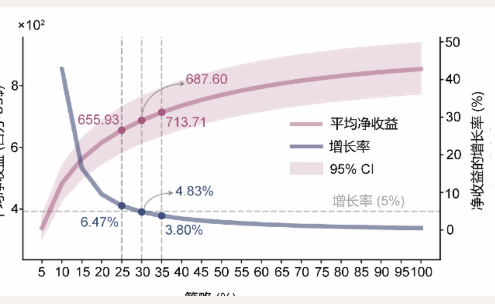

情景：百年一遇城市内涝
需求：灾时人群动态流入
供给：避难场所与公共设施
输出：短板片区与投资时序
城市韧性决策支持
基于人群响应行为模拟的
城市内涝应急避难场所 供需匹配与优化 决策支持模型
评估内涝情景下的避难服务能力，判断需求与供给是否匹配。 形成短板诊断、设施优化和建设优先级建议。
服务超大城市避难设施专项规划、平急两用公共设施布局和近期建设项目安排。
静态人口不能代表灾时需求
传统配置常把居住人口直接折算为避难需求，假定人和设施的关系不随灾情变化。内涝发生后，积水阻隔、道路绕行、设施可达性和从众行为会重塑人群流向，进而改变每个避难场所承受的真实压力。
系统把人群响应行为作为配置前提，先推演灾时动态需求，再进行供需匹配和补短板优先级排序。
METHOD
动态需求先行的配置方法
先推演灾时人群怎样移动，再判断避难设施哪里承压、哪里富余、哪里应优先补短板。
行为模拟
F = R + A + H
把积水排斥、设施吸引和从众效应转成移动方向。
供需诊断
Gap = D(t) - S
在 1km² 网格上比较动态需求与设施容量，区分承压、均衡和富余片区。
优化配置
P = Gap x BCR
按缺口强度与投入收益排序，给出近期建设和存量改造的先后次序。
人群移动模拟控制台
选择城市、参数和结果视图，查看灾时人群轨迹、需求热力和综合匹配结果。
待运行
动态需求驱动的供需匹配流程
错配诊断与规划建议
推演完成后，结合动态需求、设施容量和空间错配，形成片区判断、配置建议与实施时序。
运行当前视图后，系统读取供需错配结果并形成规划建议。
综合
169x239
待运行
规划判断
等待推演结果
先在上方选择城市和结果视图，点击运行推演后生成本次规划建议。
结果问答
等待问题
继续追问本次推演
运行推演后，可围绕优先级、设施类型、平急两用和实施时序继续询问。
从错配诊断到规划实施
供需错配结果通过成本效益拐点确定配置范围，再转成专项规划、项目库和财政计划可直接使用的成果。

成本效益最优范围
30%
在全部候选片区中，优先覆盖匮乏程度最高的 30%。继续扩大配置范围时，净收益仍会增加，但边际增幅已明显趋缓。
- 平均净收益
- 6.88 亿美元
- 拐点后收益增长率
- 4.83%
- 平均收益-成本比
- 34.40
专项规划
重点片区图
以连续高匮乏网格为基础，叠加设施可达性、洪涝暴露和人群流入方向，划定避难设施重点配置片区。
动态需求
设施容量
道路可达
洪涝暴露
近期项目库
设施增补与改造清单
将空间缺口转成项目位置、服务对象、建设方式和容量要求，统筹新增避难场所、存量设施改造与平急两用功能转换。
财政计划
分期投资安排
以净收益拐点和收益-成本比安排实施时序，优先保障边际收益高、服务缺口集中且具备实施条件的项目。
成果衔接
直接服务规划编制与项目实施
专项规划校核
校核重点片区、设施服务半径和空间布局。
近期项目入库
形成建设方式、服务规模和实施条件明确的项目条目。
年度资金安排
依据成本效益与短板强度确定投资次序。